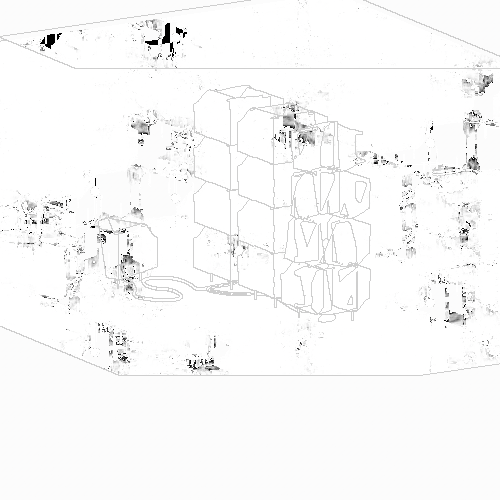

visual/3d/structure/2020
| audio |
3d/ |
character |
2020 |
| conceptual |
design |
object |
|
| visual/ |
illustration |
structure/ |
|
|
interactive |
|
|
|
photography |
|
|
|
video |
|
|
[2020.01]
Scanning Hostels Outside

Details
this was one of my first experiments with exploring "slices", and the artistic implications of them. in these two .gifs i was interested in how a "inanimate" buildings might become living when being examined with the same tools we use to study on humans.
[2020.05]
Deep Organics Filtration

Details
this image is a digital reconstruction of areuvelian filtration units that were installed in points of prominent biomass.
[2020.05]
Inquilt Hall

Details
this image was the first of my inquilt series, but not officially "canon" with them in terms of aesthetic. this is why i have not included it as part of the illustration archive.
[2020.05]
Skewer Apartments

Details
this image was the first of my inquilt series, but not officially "canon" with them in terms of aesthetic. this is why i have not included it as part of the illustration archive.
[2020.05]
Skewer Apartments

Details
this image was the first of my inquilt series, but not officially "canon" with them in terms of aesthetic. this is why i have not included it as part of the illustration archive.